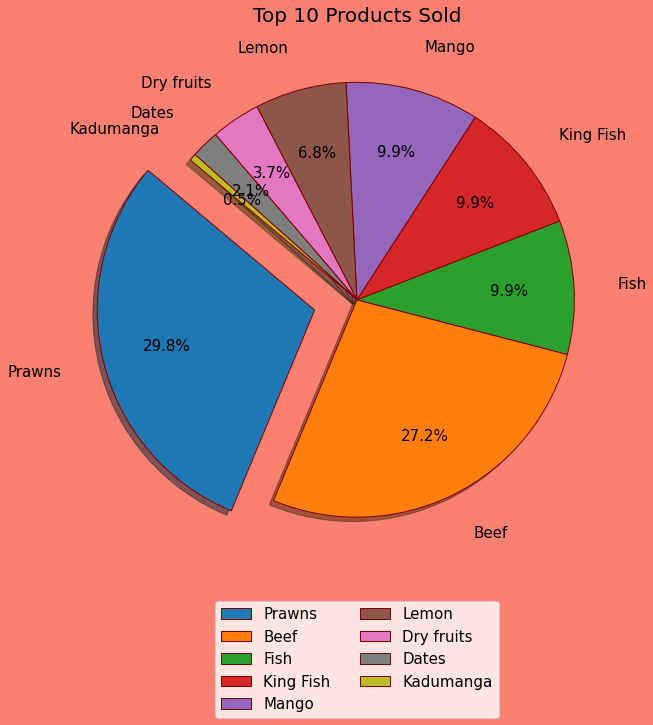
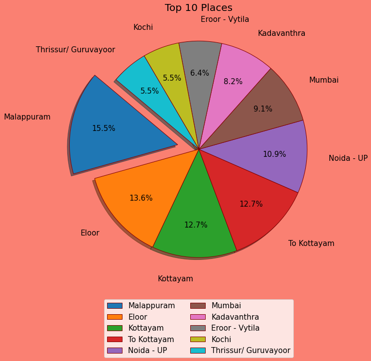

Sales-Data-Visulization
Which products sold most ?

So we can see from the Pie Chart that Prawns is the most popular product in our inventory
possesing about 29.8 % of the total sales ,while Beef is not to far from Prawns it also contributes to
27.2%
of total sales
Which cities ordered most ?

It is clear evident that Malappuram ordered most with 16.5 % of total sales while Thrissur and Kochi
ordered
least with 5.5% individual contribution on total sales
Which products are sold least ?
As we can see , the least 5 sales products are Kadumanda ,Dates, Dry Fruits,Lemons and Fish
What is the pattern of Sales month-wise
It can be observed that :-
- Data involves only 4 months - April , May , June and July.
- April month has the most number of sales with contributing to 35.6 % of total sales.
- It is also observed that as sales decreases as the month increases , the last month - July , has
the least number of sales.
Which days of the months are most favourable for orders ?
The 19th and 21st of each month are somewhat more favoured by people , either can be due to discounts or
other
offers on that days
My intincts & Further Possibilities
These are the observations that are observed by me , but there is much more possibility to gain other
insights
from this
data
like , we can analyse dates wth products to observe are there any products that are sold together ? Is
there
any effect of months on type of products sold ? Like people tends to buy cold things on hot days and hot
things on cold days